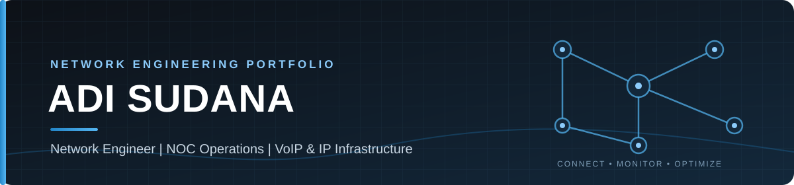

🎯 About Me
I am a network operations and infrastructure professional focused on IP networking, routing, VoIP services, availability monitoring and troubleshooting.
This portfolio is a collection of practical work notes and technical case studies. The goal is to explain the problem, the approach taken, the tools involved and the result that can be verified.
const adi = {
role: "Network Engineer | NOC Operations",
focus: ["IP Networking", "Routing", "VoIP", "Monitoring"],
platforms: ["MikroTik RouterOS", "Linux"],
interests: ["Troubleshooting", "Network Automation"],
portfolio: "Practical projects and technical documentation"
};🧰 Technical Skills
🌐 Networking & Routing
🖥️ Infrastructure & Operations
⚙️ Operational Practices
🌍 Network Evidence
I configured the public IP addressing and BGP routing for my office network: connecting the office router to its upstream provider and setting up BGP with the office AS number and IP block. The WHOIS record below is the public registry evidence of my role.
APNIC WHOIS — 49.156.60.0/24
adi@core:~$ whois 49.156.60.0
inetnum: 49.156.60.0 - 49.156.60.255
netname: IPTELECOM-ID
descr: PT IP Telecom Multimedia Indonesia
descr: Internet Service Provider
descr: Jakarta
country: ID
admin-c: AS468-AP
tech-c: AS468-AP
person: adi sudana
nic-hdl: AS468-AP
# e-mail, address, phone, fax: omitted for privacy
country: ID
mnt-by: MAINT-ID-EZ
last-modified: 2008-09-04T07:49:14Z
source: IDNIC
adi@core:~$ APNIC WHOIS — AS55667
adi@core:~$ whois AS55667
aut-num: AS55667
as-name: IPTELECOM-AS-ID
descr: PT IP Telecom Multimedia Indonesia
descr: Internet Service Provider
descr: Jakarta
country: ID
admin-c: AS468-AP
tech-c: AS468-AP
import: from AS141983 action pref=100; accept ANY
export: to AS141983 announce AS55667
default: to AS141983 action pref=10; networks ANY
mnt-by: MAINT-ID-IPTELECOM
mnt-routes: MAINT-ID-IPTELECOM
last-modified: 2022-12-08T04:10:54Z
source: IDNIC
# notify, remarks and other objects: omitted
person: adi sudana
nic-hdl: AS468-AP
# e-mail, address, phone, fax: omitted for privacy
country: ID
mnt-by: MAINT-ID-EZ
last-modified: 2008-09-04T07:49:14Z
source: IDNIC
adi@core:~$ What these records show: I am registered (handle AS468-AP) as the administrative and technical contact of IP block 49.156.60.0/24 and of AS55667, and the AS record lists a routing policy with upstream AS141983. Anyone can verify this with
whois 49.156.60.0andwhois AS55667.
What they do not show: the router configuration itself, or ownership of the block and AS. The registry records a declared policy, not live router state.
Source: output of whois 49.156.60.0, with private contact
fields omitted.
🚀 Featured Projects
1. VoIP Host Availability Monitoring
Monitoring VoIP service host reachability through MikroTik Netwatch, with automated WhatsApp notifications when a monitored host goes down or recovers.
| Problem | Detect client-side network or service interruptions early, before they are reported by users. |
|---|---|
| Approach | Register client hosts in MikroTik Netwatch and run separate UP and DOWN scripts to notify the NOC through a WhatsApp Gateway. |
| Tools | MikroTik RouterOS · Netwatch · ICMP · HTTP API · WhatsApp Gateway |
| Status | Implemented; operational evidence and configuration notes documented. |
2. BGP & IP Prefix Reachability
A routing and connectivity case study concerning the reachability of an office IP prefix and its AS from domestic networks.
| Problem | The office prefix and AS were reported as unreachable from some domestic network paths. |
|---|---|
| Focus | Review prefix visibility, BGP routing information and end-to-end reachability. |
| Topics | BGP · IP Prefix · Routing · Connectivity troubleshooting |
| Status | Case study documentation in progress. |
3. Additional Network Script
A placeholder for another network operations script. The implementation and purpose will be described after the original script has been reviewed.
Focus: Network automation · Operational efficiency
🔧 Network Operations Workflow
- Observe — Review service availability, routing state and reported symptoms.
- Investigate — Collect evidence and isolate the affected network layer.
- Respond — Communicate findings and actionable information to the responsible team.
- Document — Record the approach, validation steps and verified outcome.
📫 Contact
For discussions about NOC, Network Engineering, VoIP and Infrastructure Operations:
© Adi Sudana · Network Engineering Portfolio